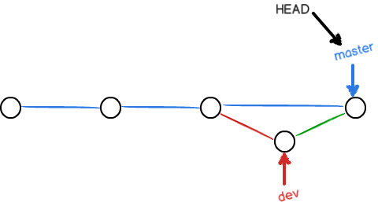
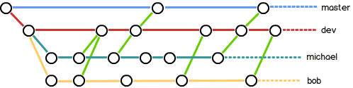

通常，合并分支时，如果可能，Git 会用
Fast forward
模式，但这种模式下，删除分支后，会丢掉分支信息。即一旦删除分支后，我们既无法知道分支存在过，也无法区分哪些修改是在分支上提交的。
如果要强制禁用
Fast forward
模式，Git 就会在 merge 时生成一个新的 commit，这样，从分支历史上就可以看出分支信息。
下面我们实战一下
--no-ff
方式的
git merge
：
首先，仍然创建并切换
dev
分支：
$ git checkout -b dev
Switched to a new branch 'dev'
修改 readme.txt 文件，并提交一个新的 commit：
$ git add readme.txt
$ git commit -m "add merge"
[dev 6224937] add merge
1 file changed, 1 insertion(+)
现在，我们切换回
master
：
$ git checkout master
Switched to branch 'master'
准备合并
dev
分支，请注意
--no-ff
参数，表示禁用
Fast forward
：
$ git merge --no-ff -m "merge with no-ff" dev
Merge made by the 'recursive' strategy.
readme.txt | 1 +
1 file changed, 1 insertion(+)
因为本次合并要创建一个新的 commit，所以加上
-m
参数，把 commit 描述写进去。
合并后，我们用
git log
看看分支历史：
$ git log --graph --pretty=oneline --abbrev-commit
* 7825a50 merge with no-ff
|\
| * 6224937 add merge
|/
* 59bc1cb conflict fixed
...
可以看到，不使用
Fast forward
模式，merge 后就像这样：

在实际开发中，我们应该按照几个基本原则进行分支管理：
首先，
master
分支应该是非常稳定的，也就是仅用来发布新版本，平时不能在上面干活；
那在哪干活呢？干活都在
dev
分支上，也就是说，
dev
分支是不稳定的，到某个时候，比如 1.0 版本发布时，再把
dev
分支合并到
master
上，在
master
分支发布 1.0 版本；
你和你的小伙伴们每个人都在
dev
分支上干活，每个人都有自己的分支，时不时地往
dev
分支上合并就可以了。
所以，团队合作的分支看起来就像这样：

Git 分支十分强大，在团队开发中应该充分应用。
合并分支时，加上
--no-ff
参数就可以用普通模式合并，合并后的历史有分支，能看出来曾经做过合并，而
fast forward
合并就看不出来曾经做过合并。